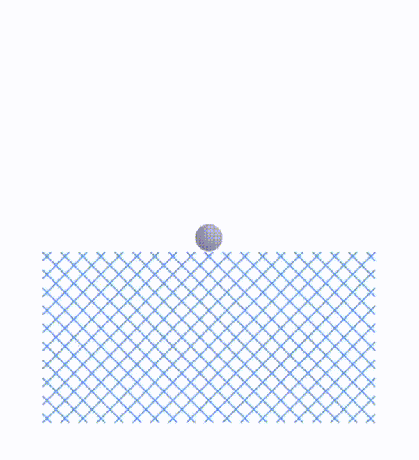
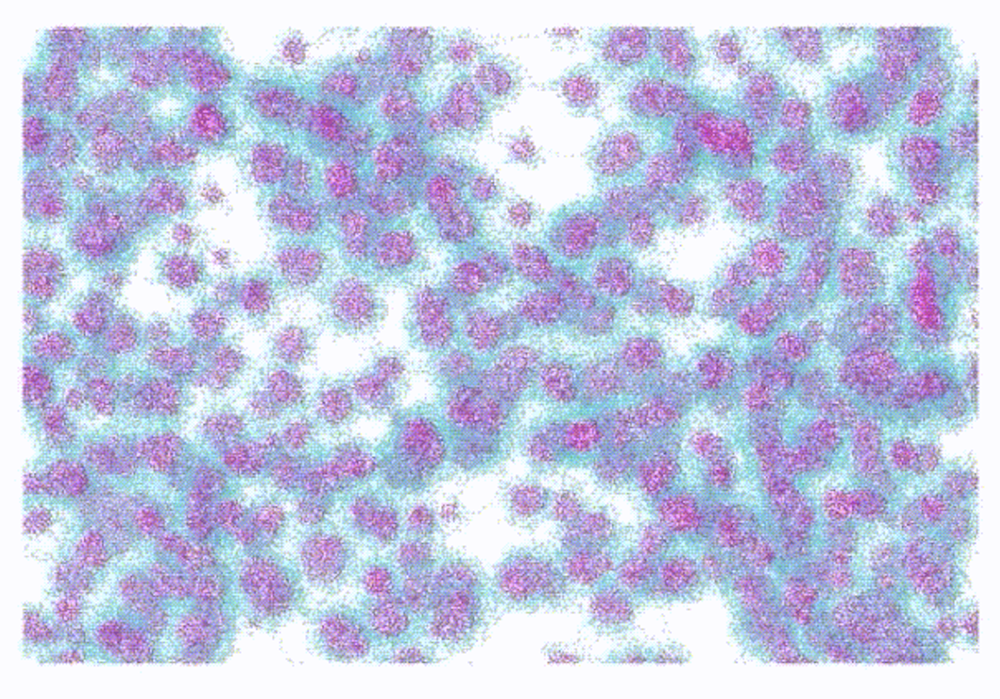
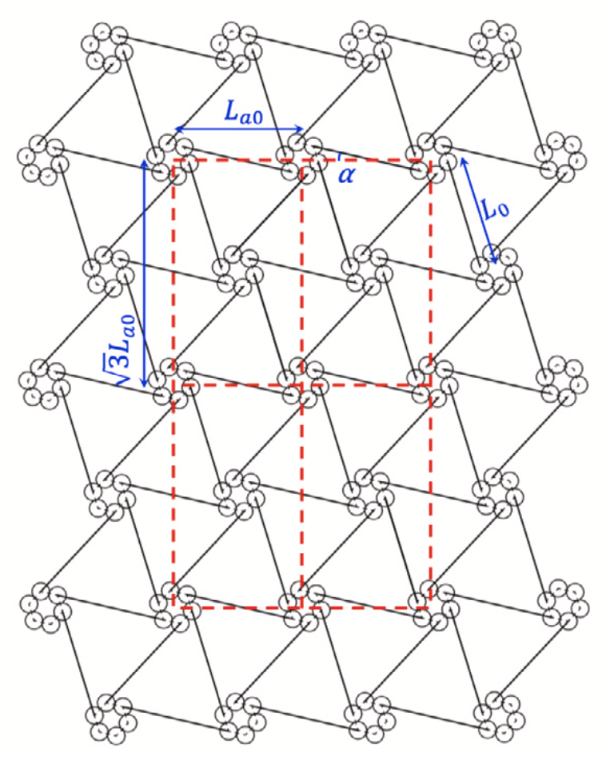
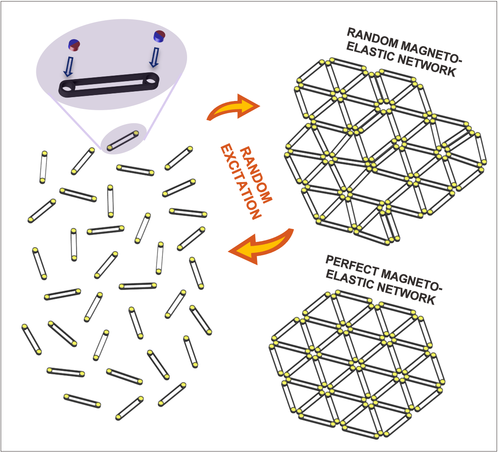
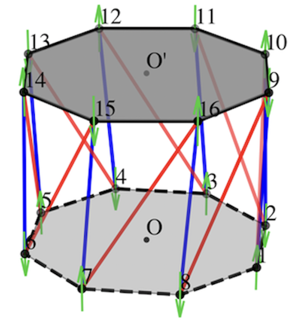

Bio
I recently earned my Ph.D. in the Mechanics, Materials, and Structures program within the Department of Civil and Environmental Engineering at Northwestern University. Since 2019, I had been a member of the Computational Nanodynamics Laboratory under the supervision of Prof. Sinan Keten, where my research focused on multi-scale modeling and simulation of mechanical and biological systems. I am now a postdoctoral scholar in the Department of Mechanical Engineering at Northwestern. Before my time at Northwestern, I completed my Bachelor’s degree at Dalian University of Technology in 2017 and my M.S. at the University of California, Berkeley, in 2018, both are in Structural Engineering.
Selected Publications
|  | Highly ordered 2D open lattices through self-assembly of magnetic units. Yang, X., Leng, J., Sun, C., & Keten, S. (2025). Advanced Functional Materials, 2412326. https://doi.org/10.1002/adfm.202412326 |
|  | Charting the envelope of mechanical properties of synthetic silk fibers through predictive modeling of the drawing process. Graham, J., Subramani, S., Yang, X., Russell, T., Zhang, F., and Keten, S. Science Advances (Accepted). |
|  | Emergent elasticity relations for networks of bars with sticky magnetic ends. Yang, X., & Keten, S. (2023). Extreme Mechanics Letters, 65, 102093. https://doi.org/10.1016/j.eml.2023.102093 |
|  | Self‐assembled robust 2D networks from magneto‐elastic bars. Yang, X., Leng, J., Sun, C., & Keten, S. (2023). Advanced Materials Technologies, 8(14), 2202189. https://doi.org/10.1002/admt.202202189 |
|  | Multi-stability property of magneto-Kresling truss structures. Yang, X., & Keten, S. (2021). Journal of Applied Mechanics, 88(9), 091009. https://doi.org/10.1115/1.4051705 |
Certificates
Passed National PE Civil Structural Exam, NCEES ID: 18-861-54, 2018.
Engineer in Training (EIT), CA, 2018.